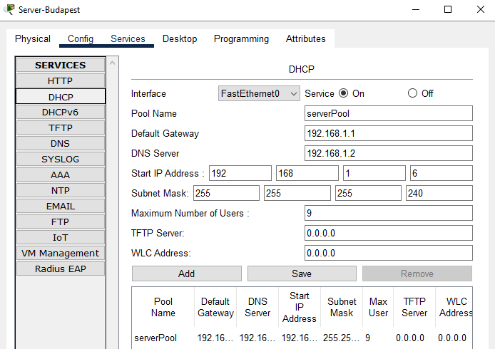
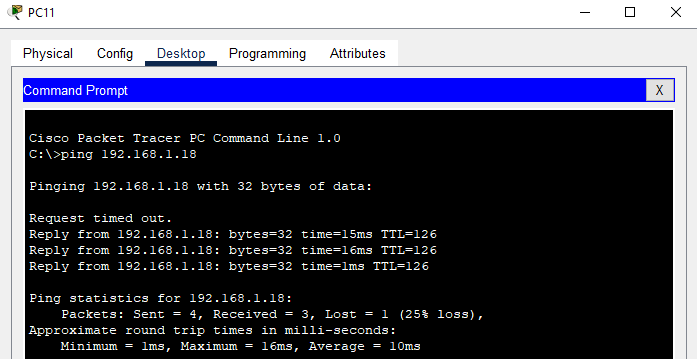
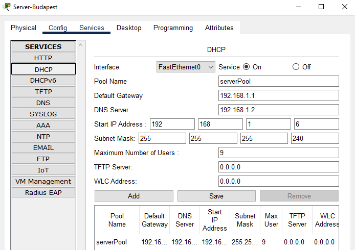
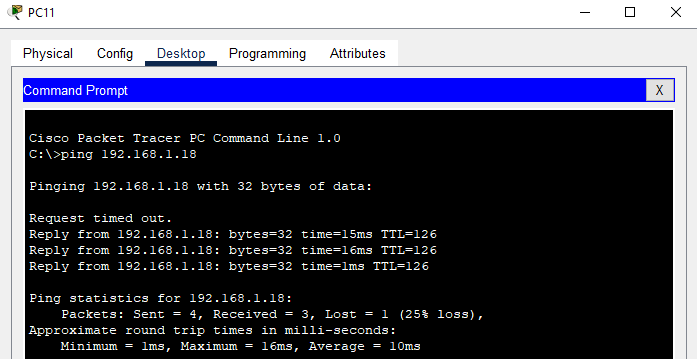

A tantárgy során sok új ismeretet szereztem, melyek segítettek megérteni a számítógépes hálózatok működését. Az első kihívást a hálózati protokollok és azok működésének megértése jelentette. Az IP-címzés és a különböző rétegek elsőre sok új információt tartalmaztak, amiket a kezdetben nehéz volt összefüggésben látni, illetve elsőre a hálózati eszközök konfigurálása is egy újabb kihívást jelentett. Azonban a sok órai gyakorlat és segítség segítettek abban, hogy könnyebben megértsem ezeket. Összeségében úgy érzem, hogy jelentős fejlődést értem el ezen a területen, illetve a további tanulmányaim és szakmai karrierem során biztosan hasznomra lesz majd az itt megszerzett tudás.
 


